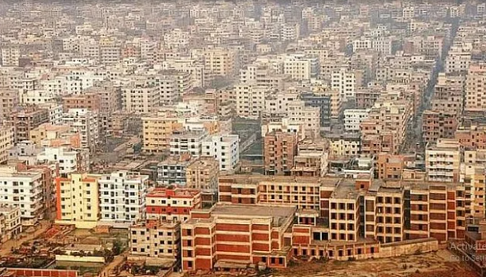

৬.৯ মাত্রার ভূমিকম্পে পধসে পড়বে ঢাকার ৪০% ভবন

দেশে ৭ দশমিক ৫ মাত্রার ভূমিকম্প হয়েছিল ১৮৮৫ সালে। এই ভূমিকম্প হয়েছিল টাঙ্গাইলের মধুপুরের
ভূগর্ভস্থ চ্যুতি বা ফাটল রেখায় (ফল্ট)। এরপর ১৩৯ বছর হতে চললেও এত বড় ভূমিকম্প ওই ফাটল
রেখায় আর হয়নি। মধুপুরের ওই ফাটল রেখায় যদি রিখটার স্কেলে (ভূমিকম্পের মাত্রা পরিমাপক)
এখন ৬ দশমিক ৯ মাত্রার ভূমিকম্পও হয়, তাহলে ঢাকায় কমপক্ষে ৮ লাখ ৬৪ হাজার ভবন ধসে
পড়বে, যা ঢাকার মোট ভবনের ৪০ শতাংশ।
ওই মাত্রার ভূমিকম্প দিনে হলে কমপক্ষে ২ লাখ ১০ হাজার মানুষের মৃত্যু হবে। আর রাতে হলে
কমপক্ষে ৩ লাখ ২০ হাজার মানুষ মারা যাবে।
‘আরবান রেজিলিয়েন্স প্রজেক্ট: রাজউক অংশ’ শীর্ষক প্রকল্পের আওতায় পরিচালিত গবেষণায় এমন
তথ্য উঠে এসেছে। ৫৬৮ কোটি টাকা ব্যয়ে এই প্রকল্প বাস্তবায়ন করেছে রাজধানী উন্নয়ন কর্তৃপক্ষ
(রাজউক)। ২০১৫ সালের জুলাইয়ে শুরু হওয়া এই প্রকল্প চলতি জুন মাসে শেষ হচ্ছে।
প্রকল্পের আওতায় ভূমিকম্প সহনশীল নগরায়ণ বিষয়ে দুই দিনের আন্তর্জাতিক সেমিনারের আয়োজন
করেছে রাজউক। এই সেমিনারের প্রথম দিনে গতকাল শনিবার রাজধানীর বনানীর একটি হোটেলে
তভূমিকম্প হলে ঢাকার পরিণতি কী হবে, সে–সংক্রান্ত গবেষণার ফলাফল তুলে ধরা হয়।
|